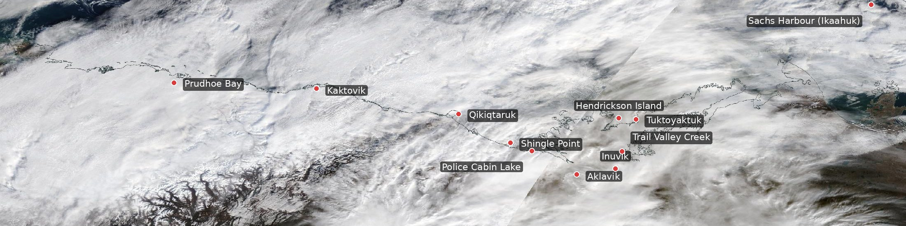
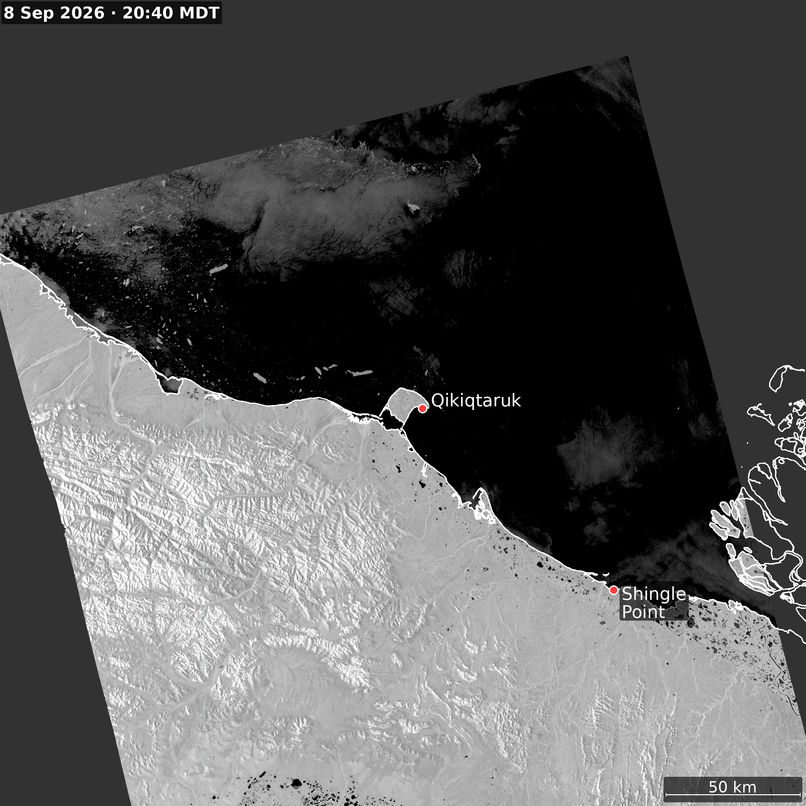
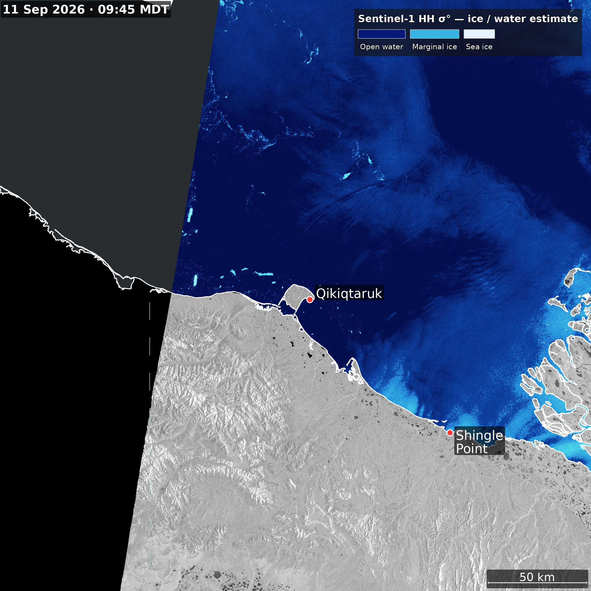
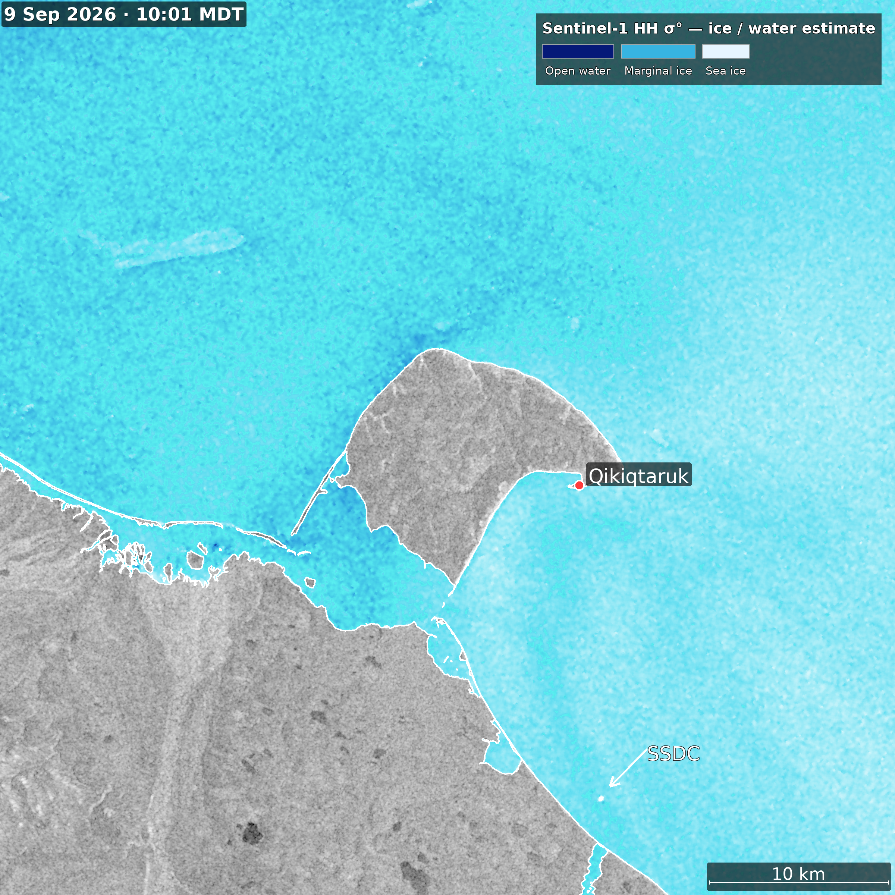
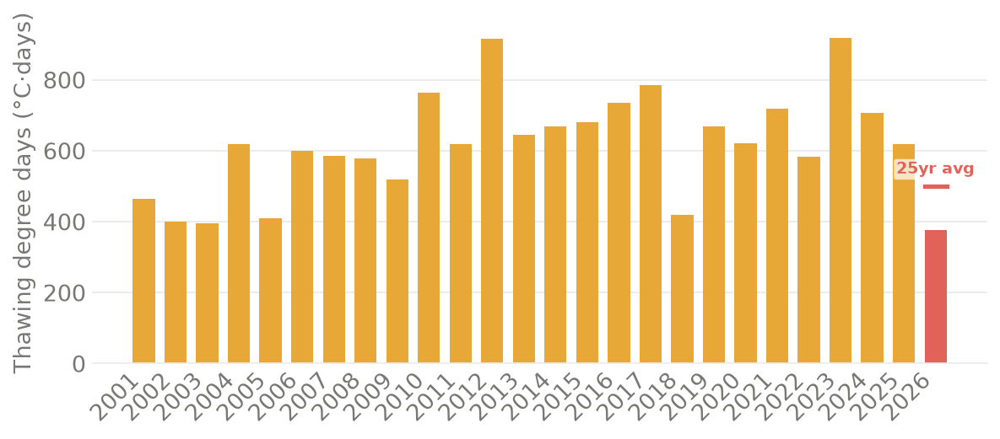
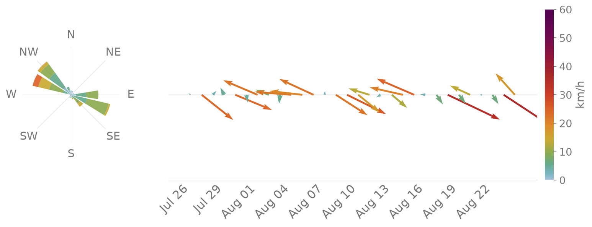

Loading imagery…

Current conditions
Temperature
—°C
Wind
— km/h
Total water level
— m
10-day GEM forecast · click a day for details
Temperature — GEM · 10-day hourly
— °C
Marine forecast · Yukon Coast
Wave height — Open-Meteo GWAM · 8-day
Text forecast
Loading…
Water levels
Total water level
— m
DFO IWLS tide prediction · 7-day
Sea ice · Sentinel-1 SAR

Sentinel-1 SAR · VV polarisation · Herschel Island area · click to zoom

150 km frame · click to zoom

50 km frame · click to zoom
Climate

Thawing degree days · current year vs. historic · ERA5

Wind rose + daily vectors — last 30 days · ERA5
Data sources
🌊
⛅
⚠️
🌡️
💻
Tide gauge — Herschel Island
Fisheries & Oceans Canada · Stn 06525
Yukon Coast marine forecast
Environment Canada · Zone 16000
Weather alerts — Yukon
Environment Canada
Weather forecast — GEM/ERA5
Open-Meteo · ECCC GEM seamless
Dashboard source code
Alfred Wegener Institute · GitHub
Alfred Wegener Institute · ALFRED Portal · Weather data fetched live on each page load · Images updated by automated workflow ·
Imagery
Forecast
Water
Ice
Links